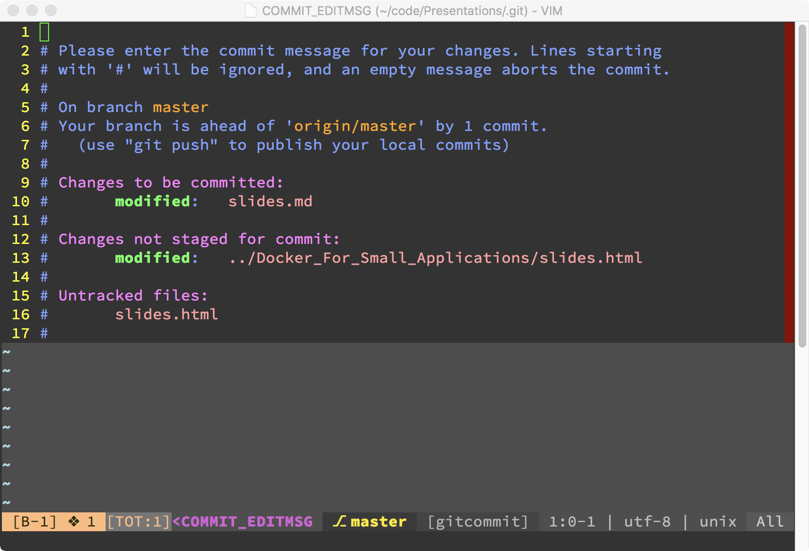

layout: true <header> <p class="left">Effingham Software Developer Group</p> <p class="right">@rebelwebdev</p> </header> --- class: title, middle, center # Git Basics ## Ryan Condron --- class: middle, center # Goal ## To understand the basic commands of git, and how to integrate it into your workflow. --- # What is it - Git is a tool to keep track of every change made to your code - Git is a distributed source control (unlike TFVC - Team Foundation Version Control - which is centralized) - Git itself is not a issue tracker, the tools build on top of git are issue trackers (i.e. Github, Gitlab, TFS) --- # Why? - Git provides tools to make working in a team easier compared to working without. - Keep a history of changes - Versioning (release points) - Code Reviews --- # Intalling Git - Windows: Installer Available at: https://git-scm.com/download/win - Linux: Available via your favorite package manager - MacOs: Install using MacPorts, Homebrew, https://git-scm.com - BSD: Install using package manager or port --- # Git Setup - Windows will need extra setup for using Git over SSH - Setup global config options ```sh # Username git config user.name "Ryan Condron" ``` ```sh # E-Mail Address git config user.email "rebelwebdevelopment@gmail.com" ``` ```sh # Set you editor git config core.editor vim ``` --- # Initialize Your Project - Open Terminal / Command Window and Prepare for your first commit ```sh # change directory to your project cd /your/project # initialize git git init ``` --- # Preparing Your First Commit - Check for secrets (i.e. API Keys, encryption keys, passwords, etc.) - Create .gitignore file - ignores files and directories that should not be changed - Starter Templates: https://github.com/github/gitignore - Should be in every project - Run git status to make sure files and directories that need to be ignored are ignored (i.e. secrets) ```sh git init ``` --- # Things to add to Source Control - Code - Documentation - Database Schema - Automated Tests - Photoshop Files --- # Things NOT to Add to Source Control - Secrets - anything that could comprimise the end product - Password - API Keys - Encryption Keys - Log Files - Dependencies - Build Artifacts - Reports - Uploaded Files --- # Your First Commit ```sh # Add Files git add --all # Commit Changes git commit -m "Initial Commit" ``` --- # Staging Files Before you can commit you will need to stage files you want to commit. This is performed by using the add subcommand followed by the directory or filename with the full path. If the ‘--all’ switch is used it will stage all changed and new files. ```sh # Stage a Single File git add docs/setup.md # Stage all files git add --all ``` --- # Git Commit This can be performed a couple different ways with the ‘-m’ switch which commits with a basic message and without which will open the default editor to edit the commit message, used for more detailed messages. ```sh git add --all git status git commit -m "My Message" ``` --- # Git Commit Editor  --- # Good vs Bad Commit Messages - Good - changed setup docs to include dependencies - fixed errors - Bad - Changed Setup docs - fixed depricated errors --- # Git History - Each time you make a commit there is a entry in your history. You can view your commit history. Your history keeps track of changes you have made to your project all the way back to the initial commit. You can view history in the web interface of your remote or using git log. - Work In Small Commits, to make the log more meaningful ```sh git log ``` --- # Removing Files - History will show removed code as well as added code. - Keep in mind that when you remove a file, code, or that password you forgot to ignore, IT WILL STILL BE IN HISTORY AND VISIBLE!!! - BFG Repo Cleaner, removes files from old commits easily --- # Setup a Remote Repository to Track Changes - After committing you should set up a remote to manage changes. - Several options exist for hosting for little to no cost. - https://github.com (free public repos, paid private repos) - https://gitlab.com (free repos public & private, pay for premium features) - https://www.visualstudio.com/team-services/ (free for small teams) - https://bitbucket.com (free for small teams) ```sh git remote add origin https://github.com/username/repo.git ``` --- # Pushing Changes to Remote Once your remote is setup you can push your local changes to it using the push subcommand followed by the remote name (central repository) and branch. ```sh git push origin master ``` --- # Pulling Changes From Remote Pulling allows you to bring changes down from the remote to your local machine. Just like pushing you can pull from a remote to your local repository. It will pull changes from the remote branch to the current working branch on your local machine. ```sh git pull origin master ```